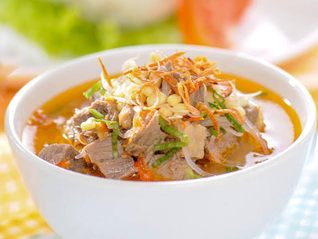

Resep Makanan Soto Tauco Byy yozz

Bahan-Bahan Utama
- 500 gram daging sapi (bagian sandung lamur atau sengkel)
- 2 liter air
- 3 samapai 5 sendok makan tauco (haluskan sebagian)
- 2 batang serai (memarkan)
- 3 lembar daun salam
- 3 lembar daun jeruk
- 40 gram gula merah (sisir halus)
- 3 sendok makan kecap manis
- Garam, gula pasir, dan kaldu bubuk secukupnya
- Minyak goreng secukupnya untuk menumis
Bumbu Halus
- 8 siung bawang merah
- 5 siung bawang putih
- 5 butir kemiri sangrai
- 5 buah cabai merah besar (rebus sebentar)
- 2 cm jahe
- 2 cm lengkuas
- 1 sendok teh ketumbar bubuk
- 1/2 sendok teh merica bubuk
- Soun (seduh air hangat)
- Tauge (seduh air hangat)
- Daun bawang dan seledri (iris halus)
- Bawang merah goreng
- Sambal cabai rawit
- Jeruk nipis
Cara Membuat
- Rebus Daging: Rebus daging sapi dengan air hingga empuk. Angkat daging, potong-potong dadu kecil, lalu saring air kaldu dan didihkan kembali di atas api kecil.
- Tumis Bumbu: Panaskan sedikit minyak, tumis bumbu halus bersama serai, daun salam, dan daun jeruk hingga harum dan matang.
- Masukkan Tauco: Masukkan tauco, gula merah, dan kecap manis ke dalam tumisan bumbu. Aduk rata hingga bumbu meresap.
- Campurkan ke Kaldu: Tuang tumisan bumbu ke dalam panci berisi air kaldu dan potongan daging sapi. Tambahkan garam, gula pasir, dan kaldu bubuk. Masak sebentar hingga mendidih dan bumbu meresap sempurna.
- Penyajian: Tata soun, tauge, dan potongan daging di dalam mangkuk. Siram dengan kuah soto tauco yang panas. Taburkan daun bawang, seledri, dan bawang goreng. Sajikan bersama sambal dan perasan jeruk nipis.
kembali ke beranda